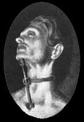
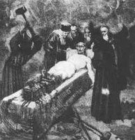
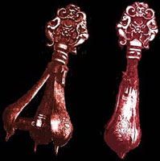

Zapatos castigadores: Los zapatos metálicos de la imagen poseen en la planta unos pinchos que en caso de apoyar al planta de pie se clavan por la parte baja del pie, para no perforarte debias mantenerte de puntillas el máximo tiempo posible, para más sufrimiento este método de tortura se combinaba con un sistema que inmobilizaba las manos y muñecas cerca de la cabeza y te obligaban a permanecer erguido.

El tenedor de los herejes: Dotado de dos puntas en cada uno de sus extremos, este cruel tenedor estaba ideado para que los herejes confesaran permitiéndoles mover la boca únicamente para hablar susurrando. Por medio de un cinturón se fijaba el tenedor al cuello del torturado que debía mantener el tiempo máximo la cabeza hacia atrás para no clavarse en el esternón y la barbilla los afilados pinchos.

Taburete Sumergible: Utilizado principalmente en mujeres acusadas de brujería. La silla era sumergida bajo el agua quedando la persona torturada inmovilizada bajo el agua sin poder respirar, el inquisidor decidía cuanto tiempo debía permanecer el torturado o torturada sumergido, el proceso solía repetirse hasta que el torturado moría ahogado o confesaba, caso en el cual se ejecutaba al acusado ahorcándole o en la hoguera más tarde.

Las botas: Las piernas de la victima se colocaban entre dos planchas de madera que se unían por medio de cuerdas. entre las piernas se situaban unas cuñas que la persona que realizaba la tortura golpeaba repetidamente con un martillo, se podían introducir hasta una docena de ests cuñas, cada vez que se realizaba un golpe preciso los huesos de las piernas se fragmentaban. Cuando se retiraban las tablas lo que antiguamente eran las piernas se convertía en un amasijo de huesos rotos que tan sólo la piel impedían que cayeran al suelo.

La pera: Dependiendo del género del torturado la pera era introducida por el ano o la vagina, una vez dentro de tu cuerpo se giraba una manivela que abría el artilugio en tu interior causando un dolor insoportable, además de la expansión el objeto tenía en su punta unos pinchos se clavaban en tu interior.